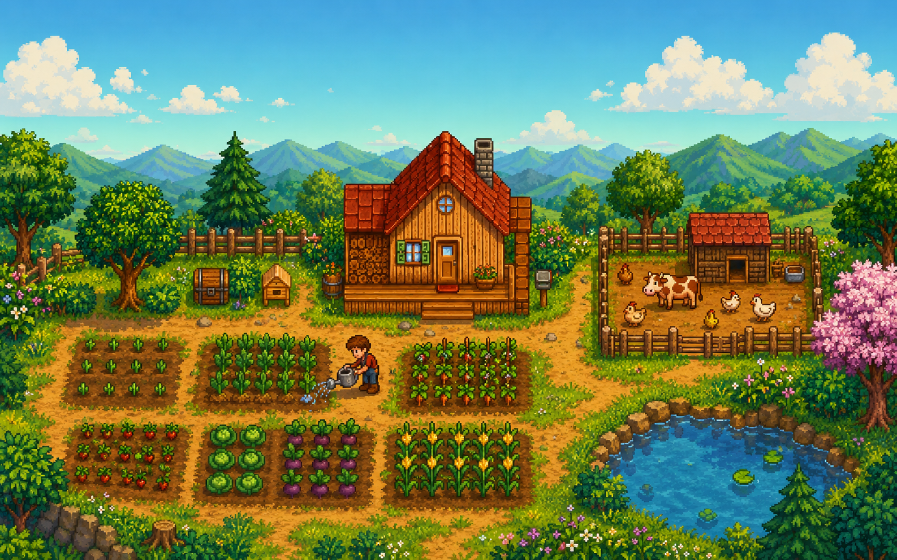
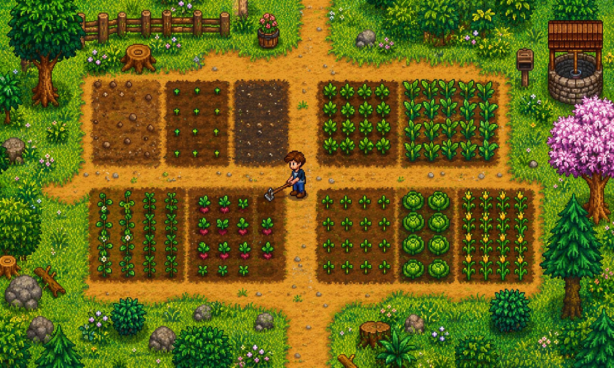
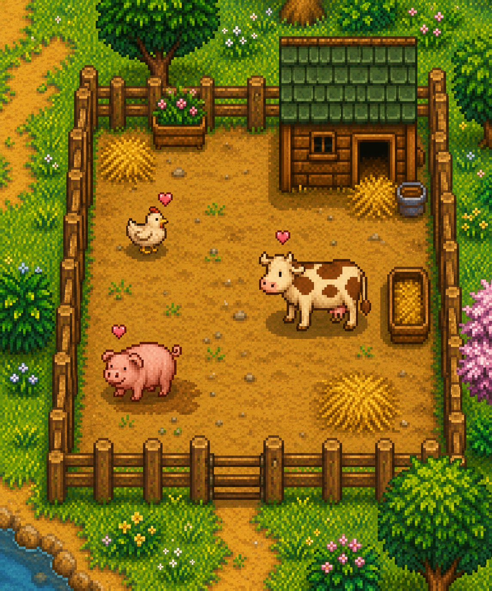
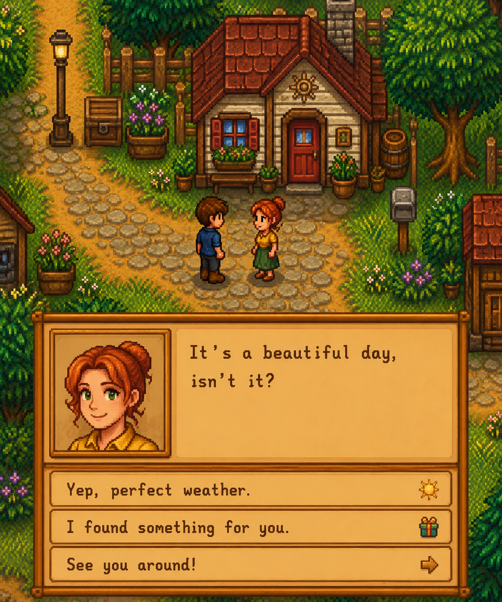
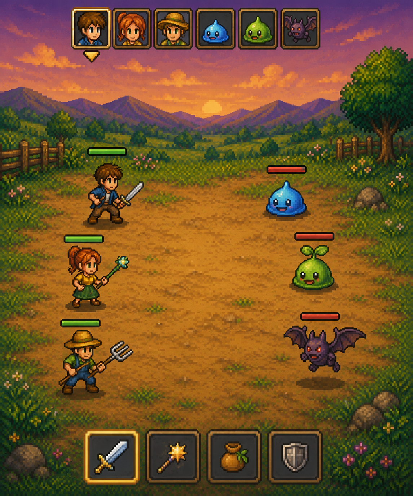
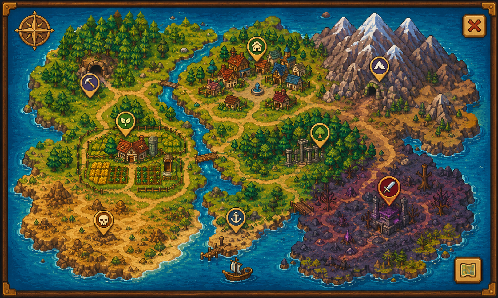

Sowur Shield is a cozy 2D farming sim with deep systems — till the land, raise animals, befriend villagers, and gear up for turn-based battles across a living world map.

Core systems built and playable right now in the demo build.
Screenshots and clips from the current build.





Runs entirely in your browser — no install required. Best on desktop.
Keyboard & mouse — controller support coming later.